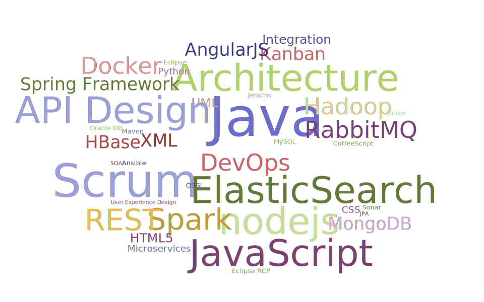

Education
I grew up in Lörrach and have studied Information Technology and Electrical Engineering in Zürich.
I graduated as a Bachelor of Science (ETH) with a grade of 5.11 out of 6.
Languages
My native tongue is German and I speak and write English fluently.
Experience
Head of Development
at
yocondo
July 2014 – November 2014 in Düsseldorf and Gründau
Founding member of a start-up that created a personalized shopping assistant.
Architect, software engineer, leader of a team of two developers and interns, Scrum master.
Technologies: node.js, CoffeeScript, RabbitMQ, ElasticSearch, WebSockets, MongoDB, AngularJS, Java, Spring Batch, Spring Integration, Tomcat.
Deployment to the Cloud with Vagrant, Puppet, AppFog, Heroku, AWS and Azure.
Senior Consultant
at
OPITZ Consulting Deutschland GmbH
June 2011 – June 2014 in Berlin and Bad Homburg
Consultant and software engineer for the central operations software of
TNT Innight GmbH
based on Eclipse RCP with a Spring backend.
Technologies: Spring, JPA, Hibernate, MyBatis, Oracle Database, Eclipse RCP, OSGi, Activiti, BPMN, Maven, Git.
Development of the operational software for Kombiverkehr (logistics).
Technologies: Spring, Hibernate, Informix, Eclipse RCP.
Member of the Competence Center Agile Development: replicator for agile principles, organization of agile retreats und coding dojos.
Senior Software Engineer
at
Schütze Consulting Informationssysteme GmbH
July 2009 – May 2011 in Berlin
Design, architecture and development of a
administrative software for the Berlin administration
based on JavaEE.
Approx. 800 active users, scope approx. 8000 person days.
Consulting for the IT service center of Berlin.
Technologies: JPA, TopLink, Hibernate, Oracle Database, PostgreSQL, Oracle AS, JBoss, Spring, Spring Integration, Spring Batch, Spring WebFlow, Spring Security, Eclipse, Maven, Ant, CVS, SVN
Senior Software Engineer
at
]init[ AG für digitale Kommunikation
October 2007 – June 2009 in Berlin
Concept and development of a SOA platform for G2C and G2G communications in Abu Dhabi. Single sign-on and identity management.
Technologies: BEA WebLogic, BEA AquaLogic, BEA Portal, Spring, Beehive, EJB3.
Requirement analysis and technical project management for a social network and a classifieds portal for the German state department.
Technologies: Spring MVC, Hibernate, PostgreSQL, JBoss.
Technical consulting for the development of XMeld, the standardized XML format for the communication between German registry offices.
Senior Engineer
at
Schütze Consulting Informationssysteme GmbH
January 2004 – October 2007 in Berlin
Development of JavaEE-based web applications for the Berlin administration.
Responsible for build and release management, continuous integration and QA.
Technologies: Struts, AJAX, Oracle Application Server, JBoss, Spring, EJB2, Oracle DB, Toplink, PostgreSQL, Hibernate, Jasper Reports.
Voluntary software development
October 1999 – today
Registration and management websites for several non-profit organizations, e.g. YMCA Europe, European TEN SING, TEN SING Hessen and our local parish.
Hobbies
- I am a mentor for the world-wide christian youth movement TEN SING in Hessen.
- I passionately play Ultimate Frisbee with Eintracht Frankfurt.
- I am the conductor of the youth choir in our local parish.
- I have been playing the piano and the bass in several bands from metal to jazz.
Things I like and do well
Certifications
- Professional Scrum Master
- SpringSource Certified Spring Professional
- Sun Certified Programmer for the Java Platform, Standard Edition 6
- BEA Certified Developer: WebLogic Portal 9/10